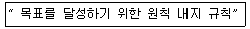
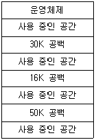
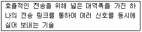
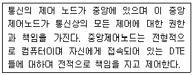
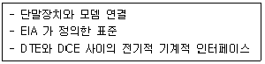
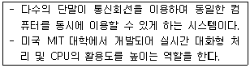

사무자동화산업기사 (2015-09-19 기출문제)
1과목: 사무자동화 시스템
1. 주로 중간관리자와 지식노동자에게 복잡하고 일상적이지 않은 결정들에 대한 컴퓨터 기반 지원을 제공하는 시스템은?
- 비즈니스인텔리전스
- 관리정보시스템
- 임원 대시보드
- 전사적자원관리시스템
(정답률: 68%)

2. 전자우편 보안을 위해 사용되는 PGP에서 제공하지 않는 기능은?
- 부인
- 기밀성
- 무결성
- 인증
(정답률: 82%)
3. 다음 중 충격식 프린터에 해당하는 것은?
- 도트매트릭스 프린터
- 레이저 프린터
- 열전사 프린터
- 잉크젯 프린터
(정답률: 87%)
4. 블록 암호화 알고리즘의 일종으로 대칭키 암호이며, 평문을 64비트로 나누어 56비트 암호키(Key)를 사용하는 것은?
- DES
- AES
- ARLA
- RC6
(정답률: 72%)
5. 사무자동화의 기본 요건을 A, B, C, D 라고 할 때 옳게 짝지어지지 않은 것은?
- A : Automated Office(자동화 사무실)
- B : Business Machine(사무기기)
- C : Communication System(통신 시스템)
- D : Data Communication(데이터 통신)
(정답률: 75%)
6. 다음 보조기억장치 등에 사용되는 USB에 대한 설명으로 틀린 것은?
- 컴퓨터와 주변 기기를 연결하는 데 쓰이는 입 ㆍ 출력 표준 중 하나이다.
- USB 방식으로 연결된 주변 기기는 대부분 핫 플러그를 지원한다.
- 미국 애플사가 제창한 시리얼 버스 인터페이스 표준 규격이다.
- USB 방식은 보통 외부 전원을 이용하지 않고도 쉽게 주변 기기를 사용할 수 있다.
(정답률: 69%)
7. 사무자동화의 궁극적인 기대효과가 아닌 것은?
- 생산성의 개선
- 조직의 최적화
- 의사소통의 원활
- 경쟁력의 증대
(정답률: 61%)
8. 스프레드시트에 관한 설명으로 틀린 것은?
- 최초의 스프레드시트는 마이크로소프트사의 엑셀이다.
- 셀 단위의 데이터 처리가 가능하다.
- 행과 열로 구성된다.
- 셀의 참조 방식은 절대참조와 상대참조가 있다.
(정답률: 81%)
9. 컴퓨터에서 수신한 데이터를 즉시 처리하여 그 결과를 단말에 반송하는 컴퓨터 시스템은?
- 실시간 시스템
- 분산처리 시스템
- 임베디드 시스템
- 배치처리 시스템
(정답률: 75%)
10. 미국의 IAB가 인터넷에 관한 조사, 제안, 기술, 소견 등을 공표한 온라인 공개 문서로 네트워크 프로토콜 또는 서비스를 구현할 때 필요한 절차와 형식 등 인터넷에 관한 정보를 알리기 위한 주요한 수단으로 사용되는 것은?
- CRM
- IEEE
- IFC
- RFC
(정답률: 32%)
11. 그룹웨어를 “공동으로 일을 하는 사람들 사이를 지원하거나 공유환경 인터페이스를 제공하는 컴퓨터 지원시스템”으로 정의한 사람은?
- 엘리스(Ellis)
- 존슨-렌쯔(Johnson-Lenz)
- 잉글바트(Doug Englebart)
- 콜맨(David Coleman)
(정답률: 73%)
12. 사무자동화 추진의 선결과제로 옳지 않은 것은?
- 사무환경 재정비
- 데이터베이스 정비
- 사무관리제도 개혁
- 조직 및 체계의 재정비
(정답률: 72%)
13. 데이터를 복수 또는 분할 저장하여 병렬로 데이터를 읽는 보조기억장치 또는 그 방법으로 디스크의 고장에 대비하여 데이터의 안정성을 높이는 기술은?
- SASD
- DASD
- RAID
- NAC
(정답률: 71%)
14. 전자메일에 사용되는 프로토콜이 아닌 것은?
- SMTP
- POP3
- SSH
- IMAP
(정답률: 66%)
15. DBMS의 관리자로 DB 설계와 행정 감독 및 분석에 대한 책임이 있는 사람은?
- DBMS 응용프로그래머
- DBMS 사용자
- 데이터베이스 관리자
- 정보보안 관리자
(정답률: 85%)
16. 기업의 구조에 따라 경영정보시스템은 피라미드 구조를 형성하는데 가장 하위 경영층에서 상위 경영층에 이르기까지 단계별 시스템 설명으로 옳은 것은?
- 거래처리시스템 → 정보보고시스템 → 의사결정시스템 → 중역정보시스템
- 정보보고시스템 → 거래처리시스템 → 의사결정시스템 → 중역정보시스템
- 거래처리시스템 → 중역정보시스템 → 정보보고시스템 → 의사결정시스템
- 정보보고시스템 → 중역정보시스템 → 거래처리시스템 → 의사결정시스템
(정답률: 48%)
17. 인텔과 애플이 공동으로 개발한 데이터, 영상, 음성을 하나의 케이블로 전송할 수 있는 단자로 양방향 10Gbps 정도의 전송속도를 가지는 것은?
- IEEE1394
- HDMI
- Thunderbolt
- DVI
(정답률: 56%)
18. 데이터 중복을 최소화하고 데이터의 정확성을 최대화하기 위하여 관계형 DB를 분석하고 능률적인 형태로 변화하는 방법은?
- 정규화
- 일반화
- 구체화
- 분석화
(정답률: 73%)
19. 사무자동화의 목표를 달성하는 장애요소가 아닌 것은?
- 참여자의 의식 등 사무실 주변 환경의 문제
- 사무자동화 기기 효용성 문제
- 실제 상황에 적합한 시스템 구축의 문제
- 숙련된 사무기기 활용 등 개개인의 문제
(정답률: 42%)
20. 다음 중 운영체제가 하드웨어를 관리하는 대상이 아닌 것은?
- 주기억장치 관리
- 중앙처리장치 관리
- 입출력장치 관리
- 레코드 관리
(정답률: 73%)
2과목: 사무경영관리 개론
21. 행정업무의 효율적 운영에 관한 규정 상 각종 증명 발급에 관한 문서의 발급번호의 형식으로 옳은 것은?
- 단말번호~출력연월일
- 단말번호_출력연월일
- 단말번호=출력연월일
- 단말번호-출력연월일
(정답률: 72%)
22. 전산실과 같은 업무상 중요한 보호구역 출입 및 전산망 내 정보시스템의 무단사용을 방지하기 위한 보안 대책으로 옳지 않은 것은?
- 정보시스템의 비밀번호는 영문, 숫자, 특수기호 등을 조합하여 9자리 이상으로 설정한다.
- 보호구역 출입은 생체정보를 통하여 고유 신원 확인이 가능한 지문인식기를 설치하여 통제한다.
- 각 PC마다 매체제어 프로그램을 설치하고 보안기능이 있는 USB 메모리를 통해 자료를 전송한다.
- 업무 편의상 패스워드가 설정된 공유폴더를 만들어 자료를 공유한다.
(정답률: 80%)
23. 사무의 종류를 목적별로 분류할 때 전략적 계획에 관한 사무로 조직체의 최고방침이나 정책적 의사결정을 위해 행해지는 것은?
- 지원사무
- 감독사무
- 관리사무
- 경영사무
(정답률: 66%)
24. 방문자와 고객들이 웹사이트를 방문하여 생성되는 정보로 웹 사이트에서 사용자 활동의 자취를 만들어 내는 데이터는?
- 하이퍼스트림 데이터
- 메타스트림 데이터
- 클릭스트림 데이터
- 링크스트림 데이터
(정답률: 50%)
25. 행정업무의 효율적 운영에 관한 규정에서 결재받은 문서를 수정하는 방법으로 옳은 것은?
- 흰색 수정펜을 사용하여 수정하고 기입한 후 수정한 사람 본인이 서명 날인한다.
- 원안의 글자를 식별할 수 있도록 해당 글자의 중앙에 가로로 두 선을 그어 삭제하거나 수정하고 수정행위를 한 사람이 서명 날인한다.
- 원안의 글자를 식별할 수 있도록 해당 글자의 중앙에 가로로 한 줄을 그어 삭제하거나 수정하고 부서장이 서명 날인한다.
- 흰색 수정펜을 사용하여 수정하고 기입한 후 부서장이 서명 날인한다.
(정답률: 68%)
26. 다음은 사무 계획의 어떤 요소를 설명한 것인가?

- 예측(forecast)
- 방침(policy)
- 예산(budget)
- 절차(procedure)
(정답률: 78%)
27. 사무통제를 위한 관리 도구로 “최단시간 내에 완성할 수 있는 방법을 찾는 기법으로 프로그램 진행사항을 추적하는 매우 유용한 관리 도구”에 해당하는 것은?
- PROCEDURE
- GANTT
- FLOWCHART
- PERT
(정답률: 74%)
28. 사무실을 포함한 주요 업무 시설의 물리적 보안 대책으로 옳지 않은 것은?
- 근접탐지시스템, 적외선 시스템 등을 활용하여 침입탐지시스템을 가동한다.
- 화재에 대비하기 위한 각종 화재감지기를 설치 운용한다.
- 계절 변화에 따른 온 ㆍ 습도 영향을 줄이기 위하여 주요 전산 시스템이 설치된 곳에 항온항습기를 설치한다.
- 갑작스러운 정전 시 서버 시스템 등을 보호하기 위하여 AVR을 설치한다.
(정답률: 72%)
29. 행정업무의 효율적 운영에 관한 규정 시행규칙 제6조(기안자 등의 표시) 제1항에 의하여 기안문 작성 시 발의자의 표시기호로 옳은 것은?
- ◆
- ◎
- ★
- □
(정답률: 71%)
30. 저작권법에 제2조(정의)내에 명시된 독립적으로 창작된 컴퓨터프로그램저작물과 다른 컴퓨터 프로그램과의 호환에 필요한 정보를 얻기 위하여 컴퓨터 프로그램저작물코드를 복제 또는 변환하는 것을 무엇이라 하는가?
- 프로그램순공학
- 프로그램코드분석
- 프로그램역공학
- 프로그램코드역분석
(정답률: 61%)
31. 공공기록물 관리에 의거 전자기록물로 구성되어 있는 기록물철의 분류번호는 어떻게 관리하는가?
- 해당 전자기록물철의 등록 정보로 관리
- 해당 전자기록물철의 접수 정보로 관리
- 해당 전자기록물철의 생산 정보로 관리
- 해당 전자기록물철의 분류 정보로 관리
(정답률: 49%)
32. 다음 중 러핑웰과 힉스의 사무분류를 틀리게 설명한 것은?
- 사무는 조직구성원이 근무하는 과정에서 처리하는 일로서, 조직체를 전제로 한다.
- 사무실이 더 이상 폐쇄된 공간으로서의 의미가 아닌 것처럼 사무도 반드시 사무실내에서 이루어지는 것은 아니다.
- 사무는 조직체의 목적을 달성하기 위하여 관리에 필요한 정보를 만드는 작업이다.
- 사무는 여러 가지 형태로 일의 내용을 기록하지만, 일의 수행 과정에서 필요한 사람을 만나 면담하지는 않는다.
(정답률: 78%)
33. 경영정보시스템의 기능별 분류로서 적절하지 않은 것은?
- 운영통제정보시스템
- 회계정보시스템
- 생산정보시스템
- 마케팅정보시스템
(정답률: 55%)
34. 거래 상대방의 응용 시스템들이 질의와 응답으로 구성된 두 개 이상의 짧은 메시지를 한 번의 접속 상태에서 주고 받는 EDI 방식은?
- 참여형 EDI
- 대화형 EDI
- 일괄 처리형 EDI
- 즉시 응답형 EDI
(정답률: 66%)
35. 전자문서의 도달시기에 대하여 바르게 기술한 것은?
- 전자문서는 수신자의 컴퓨터 파일에 전자문서가 기록된 때에 그 수신자에게 도달된 것으로 본다.
- 전자문서는 발신자의 컴퓨터 파일에 전자문서가 기록된 때에 그 수신자에게 도달된 것으로 본다.
- 전자문서는 전자문서 중계자의 컴퓨터 파일에 기록된 때에 그 수신자에게 도달된 것으로 본다.
- 전자문서는 발신자의 전자문서 서명에 의하여 수신자에게 도달된 것으로 본다.
(정답률: 60%)
36. 선진기업들은 수직적 통합으로 자신이 직접 생산하던 부품생산을 상당부문 외부주문으로 전환하는 것을 무엇이라 하는가?
- Re-Engineering
- Out-Sourcing
- Re-Structuring
- Downsizing
(정답률: 75%)
37. 사무관리와 정보관리에 관한 설명 중 옳지 않은 것은?
- 정보관리의 목적은 의사결정에 필요한 정보를 신속, 정확, 용이하게 제공하는 것이다.
- 정보관리와 사무관리는 사무활동을 대상으로 하는 점에서 같으나 관리범위가 사무관리는 넓고 정보 관리는 좁다.
- 사무관리의 목적 중 하나는 지정된 데이터를 지정된 기일 및 방법으로 작성하는 것이다.
- 사무관리의 범위는 정보관리내의 정보통제기능과 정보처리기능을 대상으로 한다.
(정답률: 75%)
38. 사무 계획화의 내용과 가장 거리가 먼 것은?
- 자발성이나 창조성 유도
- 사무 작업의 내용 파악
- 필요 정보 확정 및 사무량 예측
- 사무 처리 방식의 결정
(정답률: 69%)
39. 다음 중 시간 관계를 기초로 분류한 통제 형태로 보기 힘든 것은?
- 품질 통제
- 사전 통제
- 사후 통제
- 진행 통제
(정답률: 65%)
40. 사무관리자의 사무작업 통제에 관한 설명으로 틀린 것은?
- 세부적인 업무를 철저히 파악하여 수행한다.
- 사무절차 및 사무직원 배치를 지시한다.
- 경영조직 속에서 사무 서비스가 제대로 기능을 하는지 파악한다.
- 종업원의 감독 및 그들의 협력을 구한다.
(정답률: 38%)
3과목: 프로그래밍 일반
41. 운영체제의 역할로 옳지 않은 것은?
- 사용자와 컴퓨터 시스템간의 인터페이스를 제공한다.
- 입출력 역할을 제공한다.
- 컴퓨터 시스템의 오류처리를 담당한다.
- 고급 언어를 기계어로 바꾸는 역할을 한다.
(정답률: 72%)
42. C 언어에서 사용하는 자료형이 아닌 것은?
- long
- integer
- float
- double
(정답률: 76%)
43. 프로세스의 정의에 대한 설명으로 옳지 않은 것은?
- 실행 중인 프로그램이다.
- 프로세서가 할당되는 실체이다.
- 동기적 행위를 일으키는 주체이다.
- 지정된 결과를 얻기 위한 일련의 계통적 동작이다.
(정답률: 58%)
44. 명시적 순서 제어에 해당되지 않는 것은?
- 해당 언어에서 각 문장이나 연산의 순서를 프로그래머가 직접 변경
- GOTO문이나 반복문을 사용해서 문장의 실행 순서를 변경
- 수식의 괄호를 사용해서 연산의 순서를 변경
- 수식에서 연산자 우선순위에 의한 수식 계산
(정답률: 72%)
45. 시스템 프로그래밍 언어로 사용하기에 가장 적당한 것은?
- COBOL
- C
- BASIC
- FORTRAN
(정답률: 85%)
46. C 언어의 특징으로 옳지 않은 것은?
- 기호 코드(Mnemonic Code)라고도 한다.
- 이식성이 뛰어나 컴퓨터 기종에 관계없이 프로그램을 작성할 수 있다.
- UNIX 운영체제를 구성하는 시스템 프로그램이다.
- 포인터에 의한 번지 연산 등 다양한 연산 기능을 가진다.
(정답률: 63%)
47. 언어의 구문 요소 중 프로그램의 판독성을 향상시키고 프로그램 문서화의 주요 요소로서 프로그램 수행에는 영향을 주지 않는 것은?
- comment
- identifier
- key word
- reserved word
(정답률: 73%)
48. C 언어에서 사용하는 기억클래스에 해당하지 않는 것은?
- Dynamic
- Auto
- Static
- Register
(정답률: 72%)
49. 프로그램 수행 순서로 옳은 것은?
- 원시프로그램 → 목적프로그램 → 컴파일러 → 링커 → 로더
- 원시프로그램 → 로더 → 목적프로그램 → 링커 → 컴파일러
- 원시프로그램 → 컴파일러 → 목적프로그램 → 로더 → 링커
- 원시프로그램 → 컴파일러 → 목적프로그램 → 링커 → 로더
(정답률: 75%)
50. 객체지향 개념에서 이미 정의되어 있는 상위 클래스의 메소드를 비롯한 모든 속성을 하위 클래스가 물려받는 것을 무엇이라고 하는가?
- Abstraction
- Method
- Inheritance
- Message
(정답률: 79%)
51. BNF 심볼 중 택일을 의미하는 것은?
- ::=
- < >
- |
- #
(정답률: 79%)
52. 주어진 BNF를 이용하여 고급언어로 작성된 프로그램을 구문분석하여 문장을 문법구조에 따라 트리 형태로 작성한 것은?
- Parse Tree
- Menu Tree
- Guide Tree
- Dump Tree
(정답률: 77%)
53. 중위표기의 수식 “A * ( B - C)"를 후위표기로 나타낸 것은?
- A B C * -
- A B C - *
- A * B C -
- A B - C *
(정답률: 56%)
54. C 언어에서 문자열 입력 함수는?
- puts( )
- gostring( )
- gets( )
- putchar( )
(정답률: 65%)
55. 프로그램에서 하나의 값을 저장할 수 있는 기억장소로서, 저장되어 있는 값은 프로그램실행 중에 언제라도 변경될 수 있는 것은?
- 변수
- 상수
- 주석
- 예약어
(정답률: 72%)
56. 다음 그림과 같은 기억장소에서 15K를 요구하는 프로그램이 16K 공백의 작업 공간에 배치될 경우, 사용된 기억장치 배치 전략은?

- First Fit Strategy
- Worst Fit Strategy
- Best Fit Strategy
- Big Fit Strategy
(정답률: 75%)
57. 객체지향 기법에서 객체가 메시지를 받아 실행해야 할 구체적인 연산을 정의한 것은?
- 클래스
- 속성
- 메소드
- 인스턴스
(정답률: 65%)
58. C 언어의 이스케이프 시퀀스에서 “carriage return."을 나타내는 기호는?
- \t
- \n
- \b
- \r
(정답률: 83%)
59. 가상기억장치 관리에서 너무 자주 페이지 교체가 일어나서 시스템의 심각한 성능저하를 초래하는 현상은?
- locality
- segmentation
- thrashing
- working set
(정답률: 65%)
60. 기계어에 대한 설명으로 옳지 않은 것은?
- 컴퓨터가 직접 이해할 수 있는 언어이다.
- 기종마다 기계어가 다르므로 언어의 호환성은 낮다.
- 0과 1의 2진수 형태로 표현되며 수행 시간이 빠르다.
- 프로그램 작성이 용이하고 이해하기 쉽다.
(정답률: 82%)
4과목: 정보통신 개론
61. LAN에서 데이터의 충돌을 막기 위해 송신 데이터가 없을 때에만 데이터를 송신하고, 다른 장비가 송신 중일 때에는 송신을 중단하며 일정시간 간격을 두고 대기하였다가 다시 송신하는 방식은?
- TOKEN BUS
- TOKEN RING
- CSMA/CD
- CDMA
(정답률: 74%)
62. 아날로그 데이터를 디지털 신호로 변환하는 과정에서 PCM 부호화기에서 처리되는 순서로 맞는 것은?
- 양자화 → 부호화 → 표본화
- 부호화 → 표본화 → 양자화
- 부호화 → 양자화 → 표본화
- 표본화 → 양자화 → 부호화
(정답률: 82%)
63. HDLC 프레임 중 링크의 설정과 해제, 오류 회복을 위해 주로 사용되는 것은?
- 정보 프레임(Information Frame)
- 무번호 프레임(Unnumbered Frame)
- 감독 프레임(Supervisory Frame)
- 복구 프레임(Recovery Frame)
(정답률: 57%)
64. 전송할 데이터의 앞부분과 뒷부분에 헤더(header)와 트레일러(trailer)를 첨가하는 과정은?
- 정보의 분할 및 조림(fragmentation and reassembly)
- 정보의 캡슐화(encapsulation)
- 동기화(synchronization)
- 순서지정(sequencing)
(정답률: 59%)
65. 다음이 설명하고 있는 것은?

- 집중화
- 암호화
- 복호화
- 다중화
(정답률: 77%)
66. ITU-T 권고안의 X 시리즈에서 패킷형 DTE와 DCE간의 인터페이스는?
- X.21
- X.22
- X.24
- X.25
(정답률: 75%)
67. 다음과 같은 특성을 갖는 네트워크 형상은?

- 버스형
- 링형
- 성형
- 계층형
(정답률: 63%)
68. OSI 7 계층 중 응용계층의 기능이 아닌 것은?
- 메일 전송
- 폭주 제어
- 파일 전송
- 문서 교환
(정답률: 80%)
69. 다음 설명에 해당하는 것은?

- IEEE 802
- RS-232C
- X.25
- V.24
(정답률: 63%)
70. 다음이 설명하고 있는 시스템은?

- 멀티태스킹 시스템
- 시분할 시스템
- 시스템 제너레이션 시스템
- 데이터베이스 관리 시스템
(정답률: 57%)
71. 화상정보가 축적된 정보센터의 데이터베이스를 TV 수신기와 공중전화망에 연결해서 이용자가 화면을 보면서 상호대화 형태로 각종 정보검색을 할 수 있는 것은?
- Teletext
- Videotex
- HDTV
- CATV
(정답률: 53%)
72. 통신 프로토콜의 기본적인 구성요소가 아닌 것은?
- 구문
- 문법
- 의미
- 타이밍
(정답률: 61%)
73. 에러 제어 방식 중 CRC(Cyclic Redundancy Check)에 대한 설명으로 옳은 것은?
- 한 블록의 데이터 끝에 하나의 비트를 추가하여 에러를 검출하는 방법이다.
- 에러 검출뿐만 아니라 에러 정정까지도 가능한 방법이다.
- 프레임 단위로 오류 검출을 위한 코드를 계산하여 프레임 끝에 부착하는데 이를 “FCS"라 한다.
- 에러 검출을 위해 해밍 코드(Hamming code)를 사용한다.
(정답률: 45%)
74. 데이터 전송을 수행하는 경우, 전달 방향이 교대로 바뀌어 전송되는 교번식 통신 방식으로 무전기에 사용되는 것은?
- 반이중 통신
- 전이중 통신
- 단방향 통신
- 실시간 통신
(정답률: 75%)
75. 보안을 위한 암호화(Encryption)와 해독(Decryption) 및 데이터 압축을 지원하는 OSI 계층은?
- 전송계층
- 세션계층
- 표현계층
- 물리계층
(정답률: 52%)
76. 불균형적인 멀티 포인트 링크 구성에서 회선제어 방식 중 주 스테이션에서 각 부 스테이션에 데이터 전송을 요청하는 방식은?
- 실랙션 방식
- 대화모드 방식
- 폴링 방식
- 회선쟁탈 방식
(정답률: 62%)
77. 다음 중 데이터 통신에서의 변복조 방식이 아닌 것은?
- ASK
- PSK
- FSK
- ESK
(정답률: 75%)
78. HDLC 프레임 구조에 포함되지 않는 것은?
- 주소부
- 제어부
- FCS
- 스타트 및 스톱비트
(정답률: 66%)
79. 다음 중 비교적 좁은 지역(구내 건물 등)에 구성하여 이용하는 대표적인 정보통신망은?
- LAN
- WAN
- VAN
- ISDN
(정답률: 77%)
80. ARQ 방식 중 데이터 프레임을 연속적으로 전송해 나가다가 NAK를 수신하게 되면, 오류가 발생한 프레임 이후에 전송된 모든 데이터 프레임을 재전송하는 것은?
- Go-back-N ARQ
- Selective-Repeat ARQ
- Stop-and-Wait ARQ
- Adaptive ARQ
(정답률: 67%)